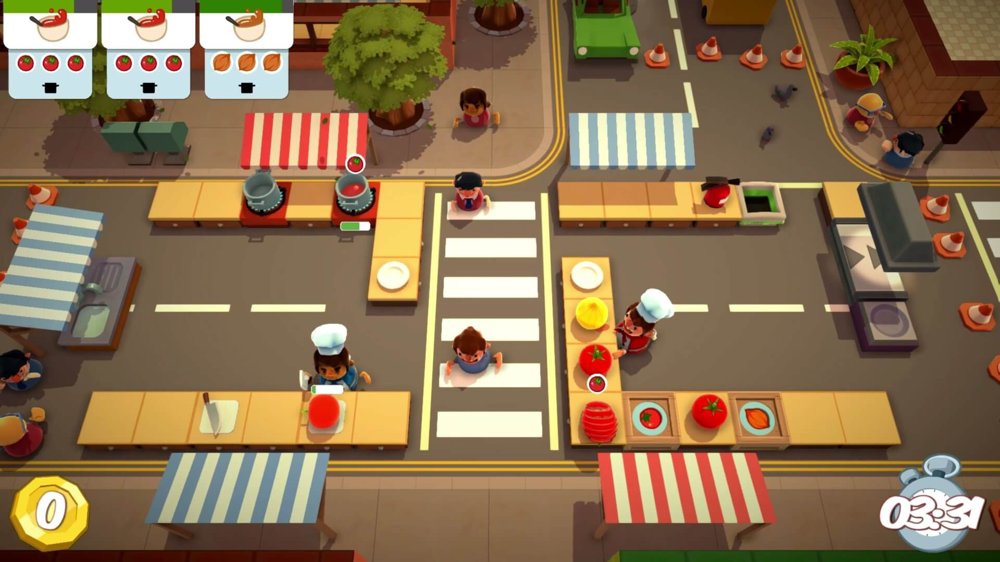
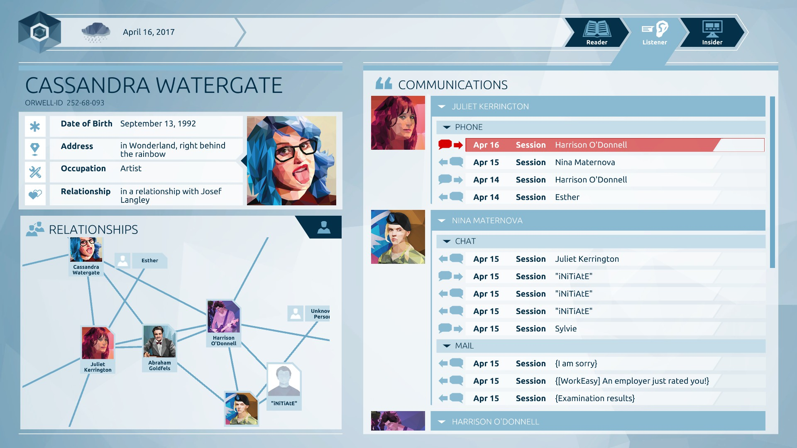

Play Something
Date: 2018.03.05
On Friday, I got together with some friends and played Overcooked. The four of us needed to work together to cook under time pressure. This co-op game has fairly simple controls, as the options of task are really just moving around, perform cooking actions, pick up things, dashing and my favorite cursing ?%$@# at your teammates. But it is interesting to note how this simplicity could lead to complex mechanics as level progresses. Our emotions as players were very much based on our interactions, and were messed with each time the game offers surprises. What we planned in the beginning of each level (assigning jobs , organization etc) eventually became futile, as the game would switch our working stations, send out mice to steal our things etc. But the messiness is really what makes the process of playing it fun.

This week I also played Orwell : Keeping an Eye On You, a game with a futuristic dystopia world creation. Player would play as this government-employed agent in the Orwell project who would dig up information of targeted people. The story of the game is quite thought provoking considering the debates around surveillance, privacy and activism. What is worth-noting is that the narrative presented in the game seems to have a relatively neutral perspective by providing the information and options, and leave the players to have their own understanding. They are not simply bashing surveillance as I would expected in such supposed futuristic stories, but rather offer the stories of both sides, pros and cons.
